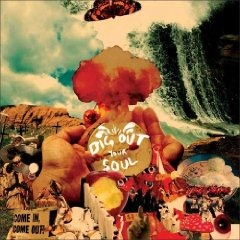

|
How do you know you've gotten old? One of the biggest bands of your life time gets distilled down to a simple question - "Oasis - aren't they from the 90's?". This was the response from a young coworker of mine when asked if she would like to attend the Oasis show while visiting our office. Indeed - the 90's (and Manchester)-based Oasis is still releasing new music and touring. Their release this year contained a number of catchy tunes and had plenty of Beatles references to go around. Noel Gallagher continues to prove his great ability to craft listenable songs that can fill a stadium. This geezer is glad to be able to see these legends live even if it is at Target Center. |
 |